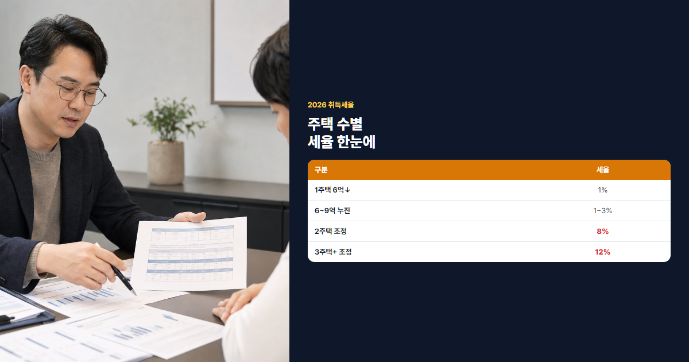

2026 취득세·등록세 완벽 계산 가이드 (세율·감면·실전 예시)
잔금 전에 꼭 넣어야 할 세금·부대비용 총정리
"집 계약했는데 세금이 얼마지?" 매매 계약서에 적힌 가격만 보고 잔금을 준비했다가 취득세·인지세·채권·법무사 비용을 합치면 수백만~수천만원이 더 드는 경우가 많습니다. 취득세는 지방세로, 취득일(잔금일)부터 60일 이내 신고·납부해야 합니다. 대출 한도 산정 때도 취득세·부대비용을 빼놓으면 잔금일에 자금이 모자랄 수 있어, 계약 전에 미리 계산해 두는 것이 안전합니다. 2026년 최신 세율·계산 공식·감면·위택스 신고까지 실전 예시로 정리했습니다.
- 2026년 취득세율표와 5억·7억·12억 아파트 계산 예시를 표로 정리합니다.
- 등록세 통합·인지세·국민주택채권·법무사 비용 등 부대비용을 7억 케이스로 시뮬레이션합니다.
- 생애최초·신혼·다주택 감면·중과, 위택스 신고, FAQ까지 담았습니다.
본론 1. 취득세 완벽 이해
취득세란?
취득세는 부동산·차량 등을 취득할 때 내는 지방세입니다. 주택 매매의 경우 취득일(잔금일)부터 60일 이내에 관할 구청 또는 위택스(wetax.go.kr)에서 신고·납부합니다. 미신고 시 가산세가 붙으므로 잔금 직후 일정을 잡아 두는 것이 좋습니다.
취득세 산정의 핵심은 취득가액과 보유 주택 수입니다. 취득가액은 통상 매매계약서상 거래가액을 기준으로 하며, 다주택·조정지역 여부에 따라 세율이 달라집니다. 잔금 당일 기존 주택을 아직 보유 중이면 2주택으로 보는 경우가 많으니, 매도·잔금 순서를 세무사·중개사와 미리 맞춰 보세요. 농어촌특별세는 취득세의 10%가 추가되는 경우가 일반적이라, 최종 납부액은 취득세 × 1.1로 잡는 것이 실무에 가깝습니다.
2026년 최신 세율표 (주택, 매매)
| 구분 | 세율 |
|---|---|
| 1주택, 6억원 이하 | 1% |
| 1주택, 6억~9억원 | 1~3% 누진 |
| 1주택, 9억원 초과 | 3% |
| 2주택 (조정지역) | 8% |
| 2주택 (비조정) | 1~3% (1주택과 동일 누진) |
| 3주택 이상 (조정지역) | 12% |
| 3주택 이상 (비조정) | 8% |
| 법인 취득 | 12% |
취득세 계산 공식
기본 공식: 취득세 = 취득가액(계약금액) × 세율
6억~9억 누진(1주택): 세율(%) = (취득가액 × 2/3억원 − 3), 단 1% ~ 3% 구간 적용
예를 들어 8억원 아파트를 1주택자가 매수하면 (8 × 2/3 − 3) = 약 2.33%이지만, 상한 3% 미만이므로 약 2.33%가 적용됩니다. 8억 × 2.33% ≈ 1,864만원이 취득세이고, 농특세 10%를 더하면 약 2,050만원 수준입니다. 반면 같은 8억을 조정지역에서 2주택자가 사면 8% 중과로 6,400만원에 달해, 주택 수와 지역만 바뀌어도 천문학적으로 차이가 납니다.
| 취득가액 | 적용 세율 | 취득세(예시) |
|---|---|---|
| 5억원 (1주택) | 1% | 500만원 |
| 7억원 (1주택) | 약 1.67% | 약 1,169만원 |
| 12억원 (1주택) | 3% | 3,600만원 |
(7 × 2/3 − 3) = 1.67% → 700,000,000 × 1.67% ≈ 1,169만원
💡 조정지역 확인 방법
- 정부24·국토교통부 조정대상지역 공고 확인
- 계약 전 중개사에게 해당 단지·지역의 조정지역 여부를 반드시 확인하세요
- 2주택 이상 보유 시 조정지역 여부에 따라 세율이 8%~12%로 급등할 수 있습니다

본론 2. 등록세·부대비용
등록세는 취득세에 통합
과거에는 취득세와 등록세(0.8%)를 따로 냈지만, 현재는 취득세에 등록세가 통합되어 있습니다. "등록세 0.8%를 또 낸다"는 오해가 많으니, 취득세 한 번만 계산하면 됩니다. 소유권 이전 등기 시 법무사 수수료는 별도이며, 등기 접수는 잔금 후 법무사가 대행하는 경우가 대부분입니다. 취득세를 납부한 뒤 등기까지 완료해야 소유권이 확정되므로, 잔금일 기준 2~4주 안에 등기·채권 매입이 이어지는 일정을 염두에 두세요.
인지세 (계약서)
| 계약금액 | 인지세 |
|---|---|
| 1천만원 이하 | 비과세 |
| 1천만~3천만원 | 2만원 |
| 3천만~5천만원 | 4만원 |
| 5천만~1억원 | 7만원 |
| 1억~10억원 | 15만원 |
| 10억원 초과 | 35만원 |
국민주택채권·법무사·중개수수료
국민주택채권은 등기 시 의무 매입하는 채권으로, 지역·가격에 따라 매입액이 달라집니다. 통상 취득가의 수 % 수준이며, 매입 후 즉시 할인 매도하면 실질 부담은 매입액의 1~3%대입니다. 예를 들어 채권 매입액이 1,000만원이면 할인 매도 시 실질 비용은 20~30만원대인 경우가 많습니다. 법무사 수수료는 보통 30~80만원(복잡도·지역별 상이), 중개수수료는 거래가액 구간별 법정 상한요율이 적용됩니다.
| 거래가액 | 매수 측 중개수수료 상한(요율) |
|---|---|
| 5천만원 미만 | 0.6% (한도 25만원) |
| 5천만~2억원 | 0.5% (한도 80만원) |
| 2억~6억원 | 0.4% |
| 6억~9억원 | 0.4% (한도 240만원) |
| 9억~12억원 | 0.5% (한도 360만원) |
| 12억~15억원 | 0.5% (한도 450만원) |
7억 아파트의 경우 매수 중개수수료 상한은 약 240만원이며, 실제로는 협의에 따라 더 낮출 수 있습니다. 다만 취득세·채권·법무사 비용은 협상 대상이 아니므로, 계약 전에 표로 정리해 두는 것이 좋습니다.
7억 아파트 부대비용 시뮬레이션 (1주택)
| 항목 | 예상 금액 |
|---|---|
| 취득세 | 약 1,169만원 |
| 인지세 | 15만원 |
| 국민주택채권 (실질) | 약 100~200만원 |
| 법무사 수수료 | 약 40~70만원 |
| 중개수수료 (매수 측) | 약 140~280만원 |
| 합계(참고) | 약 1,500~1,800만원 |
본론 3. 감면·중과 정리
주요 감면 대상
| 감면 | 내용 | 조건 요약 |
|---|---|---|
| 생애최초 | 취득세 감면 (최대 200만원 등) | 무주택, 일정 가격·면적 이하 |
| 신혼부부 | 취득세 감면 | 혼인 5년 이내, 소득·가격 요건 |
| 다자녀 | 취득세 감면 | 자녀 수·가격 요건 |
| 임대사업자 | 감면·중과 유예 | 등록·의무기간 준수 |
자세한 생애최초 감면은 생애최초 취득세 감면 가이드에서 이어서 정리합니다. 감면은 중복 적용이 제한되는 경우가 많으니, 유리한 하나를 선택해야 합니다.
생애최초는 본인과 배우자 모두 주택을 소유한 적이 없을 때, 일정 가격·면적 이하 주택을 사면 취득세를 최대 200만원까지 감면받을 수 있습니다. 신혼부부는 혼인 5년 이내·합산 소득 요건을 충족하면 유사한 감면이 가능하며, 신축·전용면적에 따라 한도가 달라집니다. 다자녀는 미성년 자녀 수에 따라 감면 한도가 늘어나고, 임대사업자는 등록·임대 의무를 지키면 중과 유예·감면을 받는 구조입니다. 각 지자체·시점별 세부 요건이 다르므로 위택스 감면 시뮬레이션 또는 구청 상담을 권합니다.
중과 대상 시뮬레이션
- 1주택 5억: 1% → 500만원
- 1주택 7억: 누진 약 1.67% → 1,169만원
- 2주택 조정지역 8억: 8% → 6,400만원
- 3주택 조정지역 10억: 12% → 1억 2,000만원
⚠️ 다주택자 주의
조정지역에서 2주택·3주택 취득 시 세율이 8~12%로 뛰어 잔금 자금 계획이 크게 틀어질 수 있습니다. 매수 전 보유 주택 수를 반드시 확인하세요.
본론 4. 신고·납부 실전
신고 시기: 취득일(잔금일)부터 60일 이내
신고 방법: 위택스 온라인 신고(회원·공동인증서/간편인증)
위택스 온라인 신고 절차
- 위택스 회원가입 후 로그인 → 지방세 신고 메뉴 선택
- 취득세 신고 유형(주택·매매) 선택 후 취득일·취득가액 입력
- 보유 주택 수·조정지역 여부·감면 대상 여부를 사실대로 기재
- 첨부 서류 업로드(계약서, 등본 등) 후 신고서 제출
- 산출된 세액 확인 후 즉시 납부 또는 분납 신청
잔금 당일 법무사·중개사에게 필요 서류 목록을 받아 두면 신고가 수월합니다. 감면을 받으려면 신고 시점에 함께 신청해야 하며, 사후 소급이 어려운 경우가 많습니다.
필요 서류
- 매매계약서, 신분증, 인감증명서(또는 본인서명사실확인서)
- 주민등록등본, 등기권리증 또는 등기필증
- 감면 신청 시 해당 증빙(생애최초·신혼 등)
미신고·연납 가산세
- 신고불성실: 무신고 시 20% 등
- 납부지연: 일 0.022% (지방세 기준)
실전 시뮬레이션 3케이스
케이스 A: 30대 직장인, 첫 집 5억
1주택·6억 이하 → 취득세 500만원, 농특세 50만원 합계 550만원. 생애최초 감면 적용 시 최대 200만원 추가 공제 가능(요건 충족 시) → 실납부 약 350만원+α. 인지세 15만원, 채권 실질 80~120만원, 법무사 40만원, 중개수수료 약 200만원을 합치면 약 800~1,100만원 부대비용 예상입니다. 대출 실행 시 LTV 산정에 취득세는 포함되지 않으므로 자기자금으로 따로 준비해야 합니다.
케이스 B: 신혼부부, 7억 신축
누진세율 약 1.67% → 취득세 약 1,169만원, 농특세 포함 약 1,286만원. 신혼부부 감면 요건 충족 시 감면액 차감 후 1,000만원대 초반까지 낮출 수 있습니다. 대출은 보금자리론·디딤돌과 병행 검토하세요. 인지세 15만원·채권 150만원·법무사 60만원·중개비 240만원을 더하면 부대비용 총 약 1,500~1,800만원입니다.
케이스 C: 2주택자, 조정지역 8억
중과세율 8% → 취득세 6,400만원, 농특세 포함 약 7,040만원. 감면 거의 불가에 가깝고, 잔금 8억과 세금 7천만원이 동시에 필요해 현금 유동성이 핵심입니다. 인지세 15만원·채권·법무사·중개비를 합치면 총 부대비용은 약 7,500만원을 넘을 수 있습니다. 매수 전 실거래가·보유 주택 재검토와 기존 주택 매도 시점을 반드시 점검하세요.
자주 묻는 질문 (FAQ)
Q1. 취득세 카드 납부 가능한가요?
위택스·지자체 창구에서 신용카드 납부가 가능한 경우가 많습니다(수수료·한도 확인). 카드사에 따라 수수료가 0.5~1%대 붙을 수 있어, 고액 취득세는 계좌 이체가 유리한 경우도 있습니다. 대출 실행 전 카드 한도와 분납 가능 여부를 미리 확인하세요.
Q2. 취득세 감면 중복 적용되나요?
원칙적으로 하나의 감면만 선택 적용됩니다. 생애최초·신혼·다자녀 중 유리한 것을 비교해 신청하세요.
Q3. 분양권 취득세는 언제 내나요?
분양권 매매 계약 시 취득세가 부과됩니다(기준시가·계약가액 중 높은 금액 등). 입주 후 일반 매매로 넘어가면 또 다른 취득세 이슈가 생길 수 있어, 분양권·입주권 거래는 단계별 세금을 따로 계산해야 합니다. 입주권·분양권은 일반 매매와 시점·세율이 다를 수 있어 전문 상담을 권합니다.
Q4. 증여·상속 취득세율은?
증여·상속은 별도 세율표(취득가액 구간별 3.5~12% 등)가 적용됩니다. 매매와 다르므로 취득 원인별로 구분해 계산해야 합니다.
Q5. 취득세 분납 가능한가요?
일정 요건(저가 주택, 생애최초 등)에서 2년 분납이 가능합니다. 위택스 신고 시 분납 신청 여부를 확인하세요.
Q6. 취득세 환급받을 수 있는 경우는?
감면 요건을 충족했으나 초과 납부했거나, 취득 후 일정 기간 내 기존 주택을 매도하는 등 법령상 환급 사유가 있는 경우 환급 신청이 가능합니다. 지자체별 해석이 다를 수 있습니다.
Q7. 농어촌특별세도 내나요?
취득세의 10%에 해당하는 농어촌특별세가 함께 부과되는 경우가 많습니다. 취득세 500만원이면 농특세 50만원이 추가될 수 있으니 합산해 예산을 잡으세요.
결론
① 취득세는 주택 수·조정지역·가격에 따라 1%에서 12%까지 크게 달라집니다. ② 등록세는 취득세에 통합되었고, 인지세·채권·법무사·중개비를 합쳐야 실제 부담이 나옵니다. ③ 잔금 전 시뮬레이션하고, 60일 이내 위택스 신고를 잊지 마세요.
본 글은 2026년 7월 기준 일반 정보이며, 취득세율·감면 요건은 지자체·법령 변경에 따라 달라질 수 있습니다. 세금 신고·납부 전 관할 구청·위택스에서 최종 확인하시기 바랍니다.